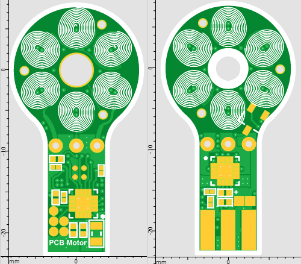
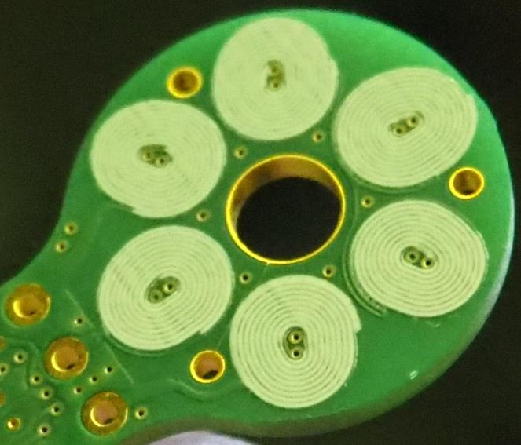

Ниже дан пример двух сторон печатной платы PCB-мотора. На нем видно направление спирали обмотки на верхней и нижней стороне платы.


Когда платы сложатся вместе (см. на отверстия), то спираль обмотки будет иметь встречное направление на разных сторонах платы. Так же надо обратить внимание как подключаются обмотки относительно трех больших круглых контактов.